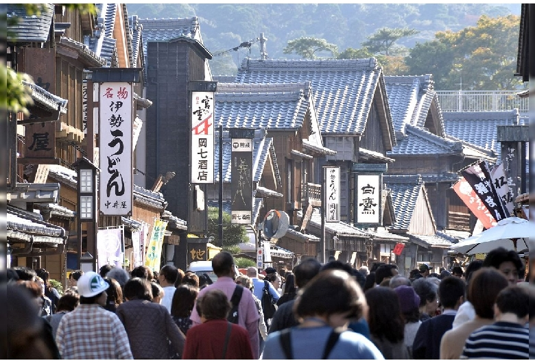

道中

伊良湖岬からフェリーに乗っていったよ（写真は載ってる間酔い止め用に見てたisland）
車だと何時間もかかる距離が一時間で着いちゃう！ただ船酔いが．．．
あと近くにいた人たちがずっと合コンの話してた フェリー乗ってまでする話じゃなくね？？？
到着！
 人が多い！！！
人が多い！！！
GWだから仕方ないとはいえ、とにかく人が多い
でも外国人は少なかった、これは意外（まあ大して見てて面白いものとかないし...）
やってきたこと
1．お参りしてきた
どうやら伊勢神宮にはお賽銭を入れる場所が3か所あるらしく、「いつもは5円しか出さないけどせっかくだし100円出すか～」と思ってたら馬鹿みたいに金持ってかれました、
そういう商売？
それと、伊勢神宮ではお願いごとの前に「お礼」をいうのが決まりらしい、大してお世話になってないのに。


2．昼飯食べた
伊勢うどんを食べたよ（写真は撮り忘れたのでありません）
もっとがっつりしたものを食べようと思ったけど、ちょうど前日にしゃぶしゃぶを馬鹿みたいに食べて胃の調子が終わっていたので断念
まあせっかく伊勢に来たしちょうどよかったかも、おいしかったし
3．おかげ横丁を散策

おかげ横丁は伊勢神宮の近くにある商店街みたいなところ
抹茶アイスを買って食べたよ（写真は撮り忘れたのでありません）
松坂牛の串焼きがあったけどさわやかもびっくりなレベルで行列ができていたので断念
あとお土産に赤福を買った（べつにいらん）
赤福ってまずくはないけどさほどおいしくもなくないですか
帰り道
渋滞がすごい！！！
帰省ラッシュ？の真っ只中だったからか、えげつない渋滞にひっかかっちゃった
家についたのは予定していた時間の3時間後くらい、どゆこと
あとベンツを煽るバケモントラックいて怖かった
さいごに
GWに伊勢神宮なんか行くもんじゃありません